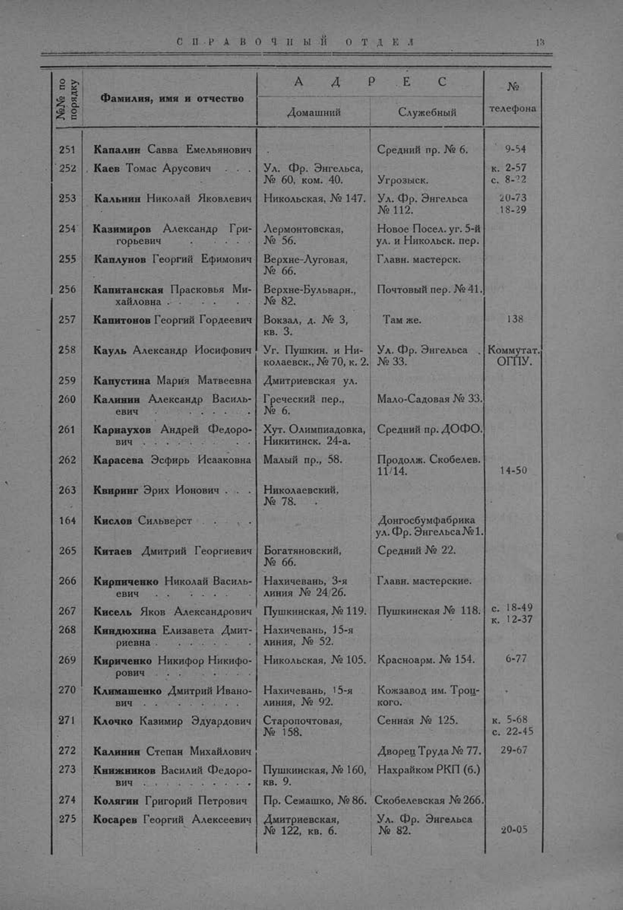

Лист источника 61
Скан

Распознанный текст
СПРАВОЧНЫЙ ОТДЕЛ 13
№№ по порядку Фамилия, имя и отчество АДРЕС № телефона
Домашний Служебный
251 Капалин Савва Емельянович Средний пр. № 6. 9-54
252 Каев Томас Арусович . . Ул. Фр. Энгельса, № 60, ком. 40. Угрозыск. к. 2-57 с. 8-22
253 Кальнин Николай Яковлевич Никольская, № 147. Ул. Фр. Энгельса № 112. 20-73 18-29
254 Казимиров Александр Григорьевич . . . . . . Лермонтовская, № 56. Новое Посел. уг. 5-й ул. и Никольск. пер.
255 Каплунов Георгий Ефимович Верхне-Луговая, № 66. Главн. мастерск.
256 Капитанская Прасковья Михайловна . . . . . . Верхне-Бульварн., № 82. Почтовый пер. № 41.
257 Капитонов Георгий Гордеевич Вокзал, д. № 3, кв. 3. Там же. 138
258 Кауль Александр Иосифович Уг. Пушкин. и Николаевск., № 70, к. 2. Ул. Фр. Энгельса № 33. Коммутат. ОГПУ.
259 Капустина Мария Матвеевна Дмитриевская ул.
260 Калинин Александр Васильевич Греческий пер., № 6. Мало-Садовая № 33.
261 Карнаухов Андрей Федорович . . . . . . . . Хут. Олимпиадовка, Никитинск. 24-а. Средний пр. ДОФО.
262 Карасева Эсфирь Исааковна Малый пр., 58. Продолж. Скобелев. 11/14. 14-50
263 Квиринг Эрих Ионович . . Николаевский, № 78.
164 Кислов Сильверст . . . Донгосбумфабрика ул. Фр. Энгельса № 1.
265 Китаев Дмитрий Георгиевич Богатяновский, № 66. Средний № 22.
266 Кирпиченко Николай Васильевич Нахичевань, 3-я линия № 24/26. Главн. мастерские.
267 Кисель Яков Александрович Пушкинская, № 119. Пушкинская № 118. с. 18-49 к. 12-37
268 Киндюхина Елизавета Дмитриевна . . . . . . Нахичевань, 15-я линия, № 52.
269 Кириченко Никифор Никифорович . . . . . . . Никольская, № 105. Красноарм. № 154. 6-77
270 Климашенко Дмитрий Иванович . . . . . . . . Нахичевань, 15-я линия, № 92. Кожзавод им. Троцкого.
271 Клочко Казимир Эдуардович Старопочтовая, № 158. Сенная № 125. к. 5-68 с. 22-45
272 Калинин Степан Михайлович Дворец Труда № 77. 29-67
273 Книжников Василий Федорович . . . . . . . . Пушкинская, № 160, кв. 9. Нахрайком РКП (б.)
274 Колягин Григорий Петрович Пр. Семашко, № 86. Скобелевская № 266.
275 Косарев Георгий Алексеевич Дмитриевская, № 122, кв. 6. Ул. Фр. Энгельса № 82. 20-05